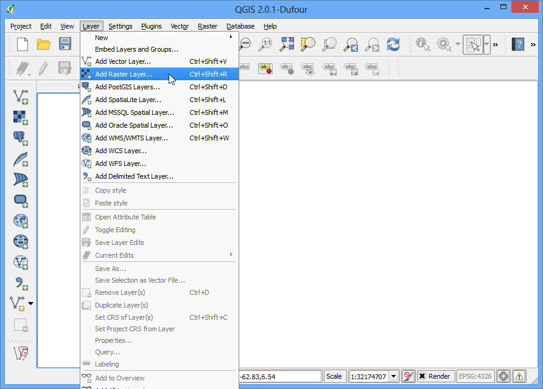
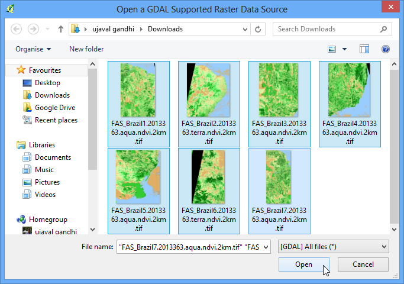
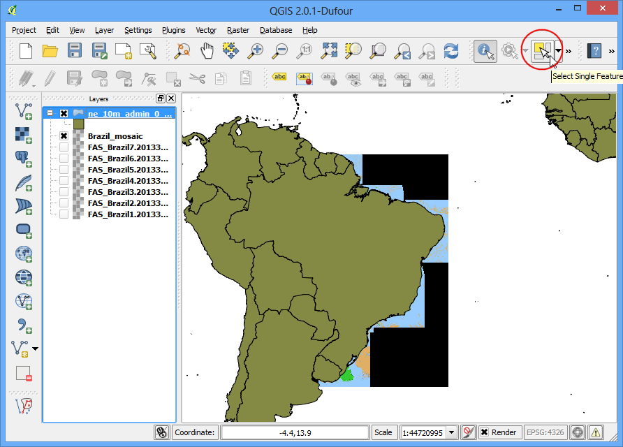
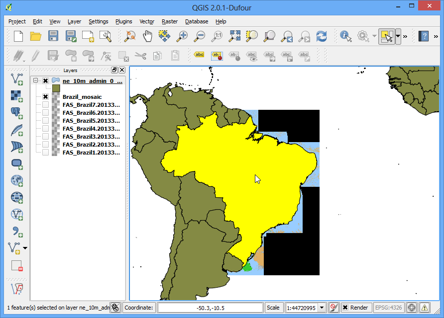
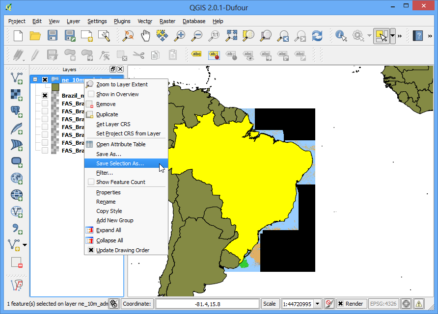
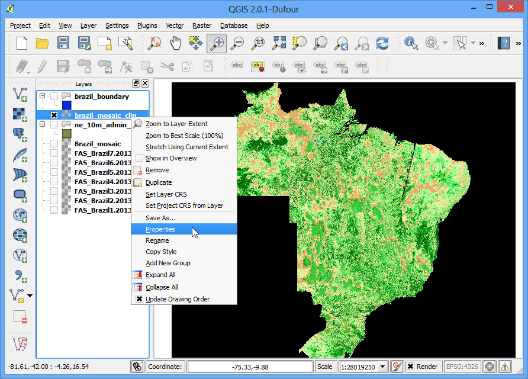
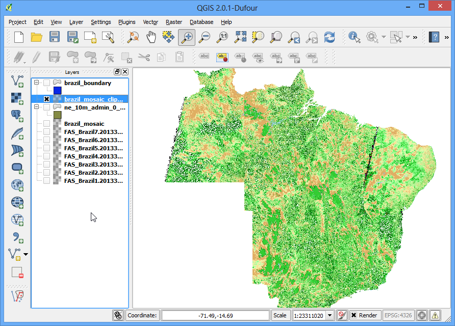

網格式影像的拼貼與裁切
[ Download PDF
A4
Letter ]
本教學會來介紹在 QGIS 中操作網格式影像的基本方法，像是瀏覽、拼貼與裁切影像等等。
內容說明
下載公開的巴西影像資料到 QGIS 中查看，然後把它們拼成一幅大型的影像，最後再把它沿著巴西的國界切下來，完成一幅沒有接縫的巴西影像資料。
操作流程
打開 QGIS，選擇 。

移到放影像的資料夾，按住 Ctrl 鍵後點選每個影像檔，全部選起來後按下 開啟。

你可以看到所有的影像都已經載入並顯示在左側的圖層目錄了，接下來我們要把所有的影像拼成一幅大影像。選擇 。
註解
QGIS 中的 影像 選單其實是一個叫做 GdalTools 的附加元件。如果你找不到 影像 選單的話，請去 分頁下把 GdalTools 啟用。詳情請參閱 使用附加元件。

在 合併影像 對話框中，按下 輸入檔案 旁邊的 選擇... 鈕，前往你存放所有 geotiff 檔的資料夾，按住 Ctrl 鍵選取所有檔案。接著按下 輸出檔案 旁邊的 選擇... 鈕，然後把輸出檔命名為 Brazil_mosaic.tif。在底下的地方，勾選 處理完成後載入QGIS地圖中，最後按下 :guilabel:`確定。

影像拼貼好載入 QGIS 後，會有一個訊息跳出來告訴你說 處理完成。現在所有的獨立影像都結合在一起成為一個大圖層了，儘管關閉所有的原始獨立圖層，把他們都取消勾選吧。

另外一種影像操作則是`裁切`影像，只要用一個多邊形的向量圖層，就可以把一幅影像沿著這個多邊形給剪下。所以來把剛才從 Natural Earth 下載的國界多邊形給讀進來看看吧。選擇 ，

選擇 ne_10m_admin_0_countries.zip 然後按下 開啟，如有要你選擇要開啟壓所檔中的哪一個圖層，就選 ne_10m_admin_0_countries.shp。

所有的國界都載到 QGIS 了，不過我們只想要巴西的國界。所以接著按下位於上方工具列的 選取圖徵，

在巴西的多邊形上隨便按一個地方，它就會被選取。

在 ne_10m_admin_0_countries 圖層上按右鍵然後選擇 儲存選取區域為... （或是:guilabel:存檔為...），

把新檔案命名為 ``brazil_boundary.shp``（譯註：如果有的話，要勾選 儲存僅選取的圖徵），確認一下 加入儲存檔案至地圖中 有開啟，最後按下 確定。

接著 QGIS 中就可以看到巴西的國界以多邊形顯示。

接下來選擇 。

在 輸入檔案(影像) 那邊選擇 Brazil_mosaic，然後把 輸出檔案 命名為 Brazil_mosaic_clipped。在底下的 裁剪模式 中，選 分析遮罩 ，然後用剛才存的 brazil_boundary 當作要剪下來的形狀，再勾選 處理完成後載入QGIS地圖中，最後按 確定。

這下子裁剪過的新圖層就會被載到 QGIS 中。你可能會發現在拼貼邊界外圍的像素都變成黑色的了，如果要移除的話，請在 Brazil_mosaic_clipped 圖層上按右鍵選擇 屬性，

移到 透明度 的分頁，在 附加無資料值 那邊填上 0。

現在我們就有了一幅不錯的、沿著國界裁切的拼貼影像。它可以用來當作其他資料的背景圖層，或是直接進行後續的分析。
